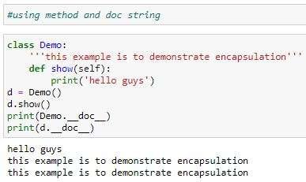

Encapsulation
It is a process of binding the attributes and the behaviors into a single entity.
• Using Encapsulation we can improve the maintenance of the application.
• Using Encapsulation we can improve the accessibility.
• Using Encapsulation we can improve the process of debugging.
• Using Encapsulation we can implement abstraction and thereby provide security to the data.
The entity to achieve Encapsulation is a class.
Syntax of a class:
class ClassName:
documentation string
statement1
statement2
statementn
attributes
behaviours
A class can contain any number of statements, attributes and behaviours. If we do not want to specify any statements in the class, then we need to specify pass keyword.
DocStrings
Docstrings are used to explain or describe the code.
To specify the docstring we can use either ''' or """ and we can access the docstrings of a class by using __doc__ attribute.
Syntax:
ClassName.__doc__
reference.__doc__

Data abstraction
Abstraction is used to hide the internal functionality of the function from the users. The users only interact with the basic implementation of the function, but inner working is hidden. User is familiar with that "what function does" but they don't know "how it does."
In Python, an abstraction is used to hide the irrelevant data/class in order to reduce the complexity. It also enhances the application efficiency